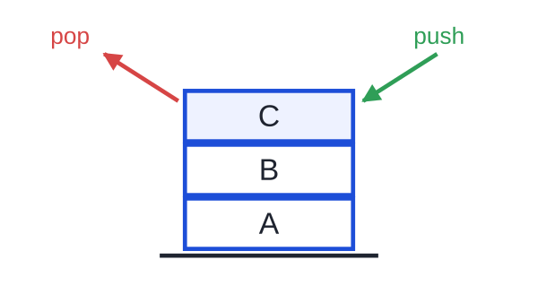

Überblick › LB 2/3 Datenstrukturen
3.3 Stapel (Stack)
Auf einem Bücherstapel liegt das zuletzt abgelegte Buch oben – und genau dieses nimmst du als Erstes wieder herunter. Dasselbe passiert, wenn du in einem Textprogramm Strg + Z drückst: Rückgängig gemacht wird immer die letzte Aktion.
Hinweis: KI als Lernhilfe
Wenn du festhängst: erst den Lernpfad-Schritt und das Video noch einmal ansehen. Wenn du dann eine KI fragst, nutze sie als Lernhilfe, nicht als Lösungsautomat:
- Schick deinen Code und die vollständige Fehlermeldung und schreib dazu, an welcher Aufgabe du arbeitest.
- Keine Namen oder persönlichen Daten in den Chat.
- Bei der Übungs-LK und der LK gibt es keine KI.
Mit einer freien KI (ChatGPT, Gemini, Claude …): Eine KI ohne Anweisung schreibt dir meist sofort die ganze Lösung – dabei lernst du nichts. Stell sie deshalb vorher so ein, dass sie dir beim Selbstlösen hilft:
- ChatGPT: Einstellungen → Personalisierung → „Benutzerdefinierte Anweisungen“, Text unten einfügen. Oder in einem neuen Chat
@studyeintippen (Lernmodus). - Gemini: Seitenleiste → Gems → „Neues Gem“, Text unten als Anweisung einfügen und speichern.
- Claude: Projekte → „Neues Projekt“, Text unten als Projektanweisung einfügen.
- Überall sonst: den Text einfach als erste Nachricht in einen neuen Chat kopieren.
Keine Namen oder Noten eingeben. Diese Anweisung kannst du kopieren:
Ich lerne im Informatik-LK Datenstrukturen in Python: verkettete Liste (Node mit data und next, LinkedList mit head), Schlange (Queue mit head und tail: enqueue, dequeue, peek, is_empty) und Stapel (Stack, oben = head: push, pop, top, is_empty). Hilf mir beim Selbstlösen, nicht mit fertigen Lösungen: - Frag zuerst nach meinem Code und der vollständigen Fehlermeldung. - Hilf in Stufen: Rückfrage, dann Hinweis, dann Zeigerdiagramm in Textform, höchstens 3 Zeilen Code für einen einzelnen Schritt. - Schreib nie eine ganze Methode oder Funktion, auch wenn ich darum bitte. - Keine deque, keine Bibliotheken, keine Einzeiler-Tricks. - Zeig mir bei Fehlern die Zeile und erkläre, was dort passiert, statt meinen Code zu korrigieren. - Spiel meinen Code mit einem Beispiel durch, bevor du sagst, dass er stimmt. - Stell immer nur eine Frage und antworte kurz. - Wenn es läuft: Lass mich erklären, warum, und frag nach einem Testfall für einen Sonderfall.
Schritt 1: Die Idee – LIFO
- LIFO-Prinzip: Zugriff ist immer nur auf das oberste Element möglich.
- Einsatz: wenn Elemente in umgekehrter Reihenfolge verarbeitet werden müssen, z. B. Rückgängig-Funktion, Zurück-Taste im Browser, Umkehren von Texten, Prüfen von Klammern, die Tiefensuche in Graphen und der Aufrufstapel bei rekursiven Funktionen (siehe Kurs „Programmieren und Algorithmen“, Seite 2.2.7).
Im Video spielst du den Bücherstapel aus Beispiel 1 als Bild durch. Achte darauf, dass push und pop immer an derselben Stelle arbeiten – oben.

Kurz geprüft 1: Die Zurück-Taste AFB I
Du öffnest im Browser nacheinander die Seiten A, B und C. Der Browser legt dabei jede verlassene Seite auf einen Stapel. Dann drückst du zweimal „Zurück“. Auf welcher Seite bist du, und was liegt danach noch auf dem Stapel?
Lösung zeigen
Beim Öffnen von B wird A aufgelegt, beim Öffnen von C wird B aufgelegt: Stapel A, B (B oben). Das erste „Zurück“ nimmt B herunter, das zweite A. Du bist auf Seite A, der Stapel ist leer.
Weiter mit Schritt 2: Die Klasse ListenStack →
Schritt 2: Die Klasse ListenStack
Die einfachste Umsetzung speichert den Stapel in einer Python-Liste. Entscheidend ist, welches Ende „oben“ ist: das Ende der Liste, denn dort kann sie ohne Verschieben wachsen und schrumpfen (siehe Seite 3.0.1). Achte im Video auf pop() ohne Index und auf __daten[-1].
Ein Stapel kann mit einem Array oder mit einer verketteten Liste implementiert werden.
1. Implementierung mit einem Array
- Das oberste Element steht am Ende des Arrays; push und pop arbeiten nur am Ende und sind deshalb O(1). In Python:
append()undpop(). - Die Elemente liegen kompakt im Speicher, es sind keine Verweise nötig.
- Ist die Kapazität erschöpft, muss in ein größeres Array umkopiert werden. Das kostet für diesen einen Schritt O(n); weil die Kapazität dabei jeweils vervielfacht wird, bleibt push im Durchschnitt O(1). Dafür bleiben eventuell Reserveplätze ungenutzt.
ListenStack in Thonny (ca. 1,5 min)Jetzt du – mittippen: Lege 1_listen/listen_stack.py an und tippe den Code aus dem Video ab: die Klasse ListenStack und die Methoden is_empty, push, pop und peek. Starte mit F5 und probiere in der Kommandozeile aus: buecher = ListenStack() · buecher.push("A"). Danach committen, z. B. 3.3 Schritt 2: ListenStack, is_empty, push angelegt.
Zum Nachlesen steht derselbe Code mit allen Erklärungen in Beispiel 1:
Kurz geprüft 2: Welches Ende ist oben? AFB I
Was liefert [4, 7, 9][-1]? Und warum benutzt ListenStack.pop den Befehl self.__daten.pop() und nicht self.__daten.pop(0)? Nenne zwei Gründe.
Lösung zeigen
[4, 7, 9][-1] ist 9, das letzte Element. pop(0) würde erstens das unterste Element entnehmen – das wäre kein Stapel mehr. Zweitens müssten dabei alle übrigen Elemente nachrücken: O(n) statt O(1).
Danach: Aufgabe 3.3.1 – LIFO an einer Folge von Operationen nachvollziehen.
Weiter mit Schritt 3: Stack mit Knoten →
Schritt 3: Stack mit Knoten – push und pop
2. Implementierung mit einer verketteten Liste
- Das oberste Element ist der erste Knoten (
head); push fügt vorn ein, pop entfernt vorn – beides O(1). - Der Stapel wächst knotenweise, es wird nie umkopiert.
- Nachteil: Jeder Knoten braucht zusätzlichen Speicher für den Verweis.
Die Klasse Stack aus Beispiel 2 benutzt einen Knoten mit einem neuen Parameter next_node=None (ein Standardwert). Damit passt push in eine einzige Zeile. Achte im Video darauf, in welcher Reihenfolge Python diese Zeile ausführt.
push und pop Schritt für Schritt (ca. 2 min)Jetzt du – mittippen: Lege 1_listen/stack_knoten.py an und tippe den Code aus dem Video ab: die Klassen Node und Stack und die Methoden is_empty, push, pop, top und peek. Starte mit F5 und probiere in der Kommandozeile aus: k = Node("A") · k2 = Node("B", k). Danach committen, z. B. 3.3 Schritt 3: Node, Stack, is_empty angelegt.
Kurz geprüft 3: Knoten zeichnen AFB I
In Thonny wird eingegeben: s = Stack(), s.push(1), s.push(2), s.push(3). Zeichne die Knoten mit __head. Was liefert danach s.pop(), und worauf zeigt __head dann?
Lösung zeigen
__head → [3|•] → [2|•] → [1|None]: Der zuletzt aufgelegte Knoten ist der erste. s.pop() liefert 3, danach zeigt __head auf den Knoten mit der 2.
Hinweis: push in der Zeiger-Werkstatt
Öffne im Kursmenü links die Seite Zeiger-Werkstatt. In der Übung „3.3 Stapel: push“ führst du self.__head = Node(3, self.__head) Schritt für Schritt aus: erst den neuen Knoten mit seinem next, dann __head.
Danach: Aufgabe 3.3.2 – Text umkehren und Rückgängig-Funktion mit der Klasse Stack.
Weiter mit Schritt 4: Klammern prüfen →
Schritt 4: Klammern prüfen mit dem Stack
Ein Editor soll prüfen, ob in einem Ausdruck alle Klammern ( ), [ ] und { } korrekt geschachtelt sind. Jede schließende Klammer muss zur zuletzt geöffneten, noch offenen Klammer passen – das ist genau das LIFO-Prinzip. Die Funktion klammern_ok legt öffnende Klammern auf den Stapel und holt sie bei einer schließenden Klammer wieder herunter. Achte im Video darauf, wie das Dictionary paare zu jeder schließenden Klammer die passende öffnende liefert.
Jetzt du – mittippen: Ergänze in 1_listen/stack_knoten.py den Code aus dem Video: die Funktion klammern_ok. Starte mit F5 und vergleiche die Ausgabe mit dem Video. Danach committen, z. B. 3.3 Schritt 4: klammern_ok ergänzt.
Kurz geprüft 4: Den Stapel verfolgen AFB I
Verfolge klammern_ok("[(x)]") mit Papier: Wie sieht der Stapel nach jedem Zeichen aus, und was gibt die Funktion zurück?
Lösung zeigen
[: Stapel [ · (: Stapel [, ( (oben) · x: übersprungen · ): pop liefert (, passt, Stapel [ · ]: pop liefert [, passt, Stapel leer. Am Ende ist der Stapel leer: True.
Weiter mit Schritt 5: Wann ist eine Klammerung falsch? →
Schritt 5: Wann ist eine Klammerung falsch?
Es gibt drei Arten, wie klammern_ok zu False kommt: Die schließende Klammer passt nicht zur obersten öffnenden, es gibt gar keine offene Klammer mehr, oder am Ende bleiben Klammern offen. Achte im Video darauf, warum s.is_empty() or s.pop() != … keinen Fehler auslöst, wenn der Stapel leer ist.
Kurz geprüft 5: Drei Fehlerarten AFB I
Alle drei Aufrufe liefern False: klammern_ok("(]"), klammern_ok(")("), klammern_ok("([]"). Gib für jeden an, bei welchem Zeichen bzw. an welcher Stelle der Funktion das False entsteht.
Lösung zeigen
"(]": bei ] liefert pop die (, erwartet wird [ – passt nicht. ")(": schon beim ersten Zeichen ist der Stapel leer, s.is_empty() ist True. "([]": [ und ] passen, aber am Ende liegt noch ( auf dem Stapel – return s.is_empty() liefert False.
Danach: Aufgabe 3.3.3 – entscheiden, wann ein Stapel und wann eine Schlange passt.
Alles zusammen: Stapel mit Knoten und Klammerprüfung
Hier steht der vollständige Code aus den Videos 3–5 zum Nachlesen, mit Speicherbild und Kontrolltabelle.
Praxisbezug: Undo-Stack und Aufrufstapel
Alltag: Bildbearbeitungs- und Textprogramme speichern jede Aktion auf einem Undo-Stack. Strg + Z nimmt die oberste Aktion herunter und macht sie rückgängig; sie wandert dabei auf einen zweiten Stapel für „Wiederholen“.
Beruf: Tritt in einem Programm ein Fehler auf, zeigt der „Stack Trace“ den Aufrufstapel: welche Funktion welche aufgerufen hat. Softwareentwicklerinnen und -entwickler lesen ihn täglich bei der Fehlersuche. Auch Taschenrechner und Compiler werten Ausdrücke wie 3 * (4 + 5) intern mit Stapeln aus.
Das Wichtigste
Stapel (Stack): Datenstruktur nach dem LIFO-Prinzip („Last In – First Out“): Das zuletzt hinzugefügte Element wird als Erstes entnommen.
Grundoperationen: push(x) legt x oben auf den Stapel, pop() entfernt das oberste Element und gibt es zurück. top() (auch peek()) liefert das oberste Element, ohne es zu entfernen, is_empty() prüft, ob der Stapel leer ist.
Aufwand: Alle Operationen liegen in O(1).
Grundaufgaben
Aufgabe 3.3.1: LIFO nachvollziehen AFB I
Ein leerer Stapel erhält die Operationen push(4), push(7), push(2), pop(), push(9), top(), pop(), pop(). Gib nach jeder Operation den Inhalt (oben rechts) und die Rückgabewerte an.
Aufgabe 3.3.2: Text umkehren und Undo AFB II
Datei: 1_listen/umkehren_undo.py – neu anlegen; die Klasse Stack holst du mit from stack_knoten import Stack
Commits: nach Teil 1: 3.3.2 Teil 1: umkehren(text) mit Stack · nach Teil 2: 3.3.2 Teil 2: Undo-Simulation, Text wieder „Hallo“
- Schreibe mit der Klasse
Stackeine Funktionumkehren(text), die einen Text rückwärts zurückgibt. - Simuliere einen einfachen Texteditor: Die Eingaben „Hallo“, „ “, „Welt“ werden an einen Text angehängt und jeweils auf einen Undo-Stack gelegt. Zweimal „Rückgängig“ soll den Text wieder auf „Hallo“ setzen.
Das kann ich jetzt
Grau steht, was der Lehrplan verlangt, darunter, was das für dieses Thema konkret heißt. Hake einen Punkt ab, wenn er in deinem Hefter zusammengefasst ist und du ihn ohne Hilfe kannst. Wie du ihn zusammenfasst, entscheidest du selbst. Die Haken speichert nur dein Browser.
Lehrplan LB 2 Stapel und Schlange (Kennen von komplexen Datenstrukturen)